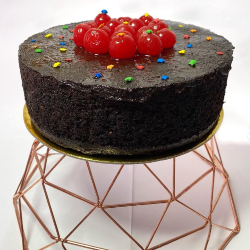
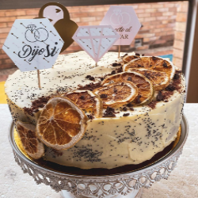
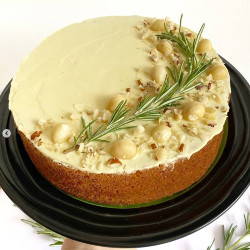
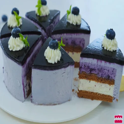

Nuestros productos
-

Torta envinada
Nuestra torta envinda tiene un proceso de maceracion de mas de dos meses, a base de ciruelas, uvas pasas, nueces, vino tradicional dulce y el toque secreto, lo que hace que nuestra mezcla sea una explosion de sabores y textura
-

Torta de amapola
Nuestra apetecida torta de amapola es el balance perfectro entre textura suave y melcochuda, con notas criticas de naranja y limon, un toque ligeramente almendrado y aroma exquisito
-

Torta de zanahoria
Nuestra clasica torta de zanahoria es el placer al que no te puedes resistir, esta elaborada con torozos de nuez del brazil y variedad de especias que le dan sabor, aroma y textura inigualable
-

Torta de arandanos
Nuestra deliciosa torta de arandanos tiene notas criticas, los mas frescos arandanos y el ingrediente estrella esta preparacion: yogur griego,sin azucar,ni aditivos,que le brinda humedad y suavidad a esta maravilla